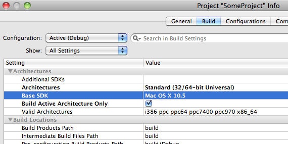
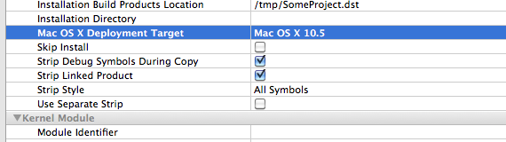

Please note: this article is part of the older "Objective-C era" on Cocoa with Love. I don't keep these articles up-to-date; please be wary of broken code or potentially out-of-date information. Read "A new era for Cocoa with Love" for more.
Building for earlier OS versions from Snow Leopard
It is very easy, when developing on a new operating system, to create projects that won't run on any previous OS version. To ensure backwards compatibility, there are Xcode and gcc options that allow you to build while maintaining support for earlier OS versions. In this post, I'll look at the ways in which this compatibility is controlled and some of the new ways it can go wrong on Snow Leopard.
The cost of backwards compatibility
Customers are regularly unhappy at programmers for dropping support for older operating systems as soon as possible. As with most decisions like this, the reason tends to be a little bit feature-driven and a little bit economic: development support costs increase for every supported version of the OS older than the most recent supported version.
Supporting older operating systems requires:
- When creating a build on a newer OS, you must be careful to write the entire program relying only on behaviors that existing on your earliest targetted OS.
- A test system running an earlier version of the OS to verify that point 1 succeeded.
Point 1 tends to be where most programmers rule out support for earlier systems. I know that as much as 20% of the Mac user-base are still running Mac OS X 10.3.9 and 10.4.11 but I'm unlikely to ever support these operating systems again in one of my releases because these markets aren't big enough to warrant giving up features like Obj-C 2.0's fast iteration, NSOperationQueue or CoreAnimation which have changed how I write programs.
Point 2 can also be a serious impediment for small developers who simply don't maintain a series of test machines for their software. Larger developers can simply buy extra machines or buy time in Apple's Compatibility Labs but even large companies need to weigh this cost against the potential return.
Easy part: building against earlier SDKs in Xcode
With Snow Leopard now installed on my main development machine though, I'm forced to go through the backwards compatibility rigamarole just to ensure Leopard compatibility. As fast as the uptake of Snow Leopard was, it still isn't the dominant Mac OS X version — it is far too soon for me to demand users upgrade (although Gus Mueller has already ripped that band-aid off with the 10.6-only release of Acorn 2).
While I'm talking about Mac OS X here, these settings are the same when building for different iPhone OS versions.
Building against earlier SDKs in Xcode is the easy part. There are two settings involved:
- Base SDK (the OS version whose headers you'll use and the newest OS version from which you'll use optional features)
- Mac OS X Deployment Target (the oldest OS version supported)
The Base SDK controls what SDK you actually link against and the Mac OS X Deployment Target controls the minimum OS version allowed. In simple cases, just set both of these to the same value.
You set the Base SDK in the Project settings:
and further down the settings list, the Mac OS X Deployment Target:
Weak linking (using newer features if they are available)
Weak linking allows you to link against a newer SDK but deploy on an older operating system.
You should use weak linking in cases where you:
- want the program to run on a earlier version of the operating system
- want to use a feature from a newer OS version if it is available
Set the Base SDK to the newer OS version that contains the newer features you will use if available and set the Mac OS X Deployment Target to the older version.
This causes everything newer than the Mac OS X Deployment Target to be weak linked — meaning that you will try to link against the newer features if available but can live without them if they are not available.
If a program is run on an older OS than the Base SDK:
- unavailable weak linked functions will have
NULLfunction pointers - unavailable weak linked class names will return
nilfromNSClassFromString - unavailable weak linked methods will return NO from the containing objects'
respondsToSelector:method.
The important point to remember is that anything weak-linked should be checked to ensure it is non-zero before use.
For example, suppose to wanted to set the Dock to autohide on Mac OS X 10.6 (using the new Snow Leopard -[NSApplication setPresentationOptions:] method) but you want your application to also run on Mac OS X 10.5 and leave the Dock as-is, you could set the Base SDK to Mac OS X 10.6, the Deployment Target to Mac OS X 10.5 and run the following code:
if ([[NSApplication sharedApplication]
respondsToSelector:@selector(setPresentationOptions:)])
{
[[NSApplication sharedApplication]
setPresentationOptions:NSApplicationPresentationAutoHideDock];
}Command-line building for earlier OS versions
You might think POSIX/Open Source libraries that are written to be cross-platform and don't link directly against an Mac OS X specific libraries shouldn't need to change from OS version to OS version.
However, most C/C++ libraries do link against libc (which is a part of libSystem on Mac OS X). Since libSystem is a dynamic library and changes between OS versions, this means that you must be mindful of exactly what version of libSystem you build against.
A common example of getting this wrong is the following linker error:
Undefined symbols:
"_fopen$UNIX2003", referenced from:
_some_function in somefile.oYou will get this and similar errors when trying to link two different components which are themselves linked against different versions of libSystem. In this case, the application was linked against Base SDK Mac OS X 10.5 but the static library was linked against the current libSystem.B.dylib in Mac OS X 10.6.
Obviously, fopen is a Standard C function and it is in every version of libSystem but different versions of libSystem have subtly different versions of the function. To fix the bug, you must ensure that all components you link together themselves link against the same versions of the standard libraries.
In the example above, the solution is to rebuild the static library from the source using the following gcc link-line options:
-isysroot /Developer/SDKs/MacOSX10.5.sdk -mmacosx-version-min=10.5That's right, it's the same settings as in Xcode but on the command line — the Base SDK (isysroot) and the Mac OS X Deployment Target (mmacosx-version-min).
Once you've built an executable or a dynamic library, you can use otool to check that they're not linking against any unexpected dynamic libraries (which may not be present on older OS versions) with the following command:
otool -L myAppExecutableThis reports the required dynamic libraries and their version numbers.
Run the same command on the dynamic libraries in your targetted SDK directory to check their version numbers against the library numbers required by your executable.
Be wary of changed gcc
In Mac OS X 10.5, if you didn't specify an architecture, gcc would build a 32-bit binary. In Snow Leopard, this has changed: if no architecture is specified, a 64-bit binary will be built.
You'll need to pay attention to this, particularly for auto-configured builds which may need to coaxing now to build 32-bit binaries.
Of course, this is an easy thing to do: just specify "-arch i386" or "-arch x86_64" or both on the gcc compile command line — but you will need to remember.
This problem can manifest in an annoying way: a file not found error when linking, even when there is a file of the desired name in the search path. If this occurs, be sure to check that the file in the search path contains the right architecture for your build.
Check an architecture with the following:
file libSomeLibrary.dylibIf you're trying to build a 32-bit binary and you only see:
libSomeLibrary.dylib (for architecture x86_64): Mach-O 64-bit executable x86_64Then you need to rebuild libSomeLibrary.dylib or find a 32-bit version.
Conclusion
Programmers don't like supporting earlier OS versions because it means more work and fewer cool features to play with. Despite this, there are often economic reasons to put in the effort and forgo the more modern features to support earlier OS versions.
You will want to choose an OS version when you start a project, since removing OS-specific features can be hugely time consuming — it is always easier to drop support later rather than gain support.
Set the Base SDK, set the Deployment Target and make certain all your components remain in-sync on these points. Remember to double check the build target and architecture for all components you build for yourself and always be wary of dynamic libraries.
Creating alpha masks from text on the iPhone and Mac
WhereIsMyMac, a Snow Leopard CoreLocation project